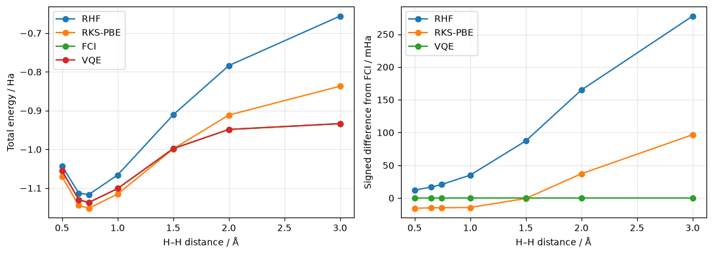

Quantum chemistry
Electronic structure, with independent references
Constructed molecular Hamiltonians and benchmarked solver accuracy against basis and active-space choices.
H₂: |VQE − FCI| < 1.7 × 10⁻⁹ Ha across 7 bond lengths.
Motivation
A low variational energy alone does not establish a correct molecular simulation. These studies ask how the Hamiltonian, solver, basis and active space each affect the result.
Implementation
H₂ bond scans, an eight-qubit HCN π-active-space VQE study, and nested active-space benchmarks for NH₃, H₂CO₃ and HCO₃⁻. The notebooks expose molecular integrals, fermionic assembly, Jordan–Wigner mapping, state preparation and physical-sector checks. RHF, PBE, FCI and CASCI provide explicitly scoped references.
Results
Across seven STO-3G H₂ bond lengths, the saved VQE energies differ from FCI by less than 1.7 × 10⁻⁹ Ha. All nine seeded HCN runs meet the recorded active-space energy target. The scaling study compares 4-, 8- and 12-qubit spaces against the same orbital-basis references.
Limitations
These are noiseless, finite-basis calculations. Solver agreement does not remove basis or active-space error. Fixed geometries, a frozen HCN σ framework and the absence of diffuse functions for the anion limit chemical interpretation. No experimental-accuracy or hardware claim is made.
